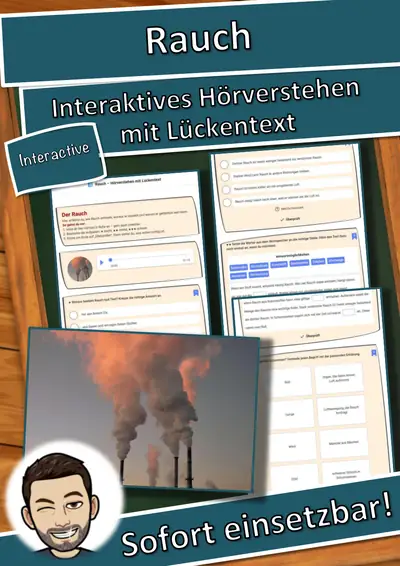

Rauchen und Vapes – warum Nikotin abhängig macht – Lesespurgeschichte mit Rätselaufgaben (Klasse 7)
Rauchen und Vapes – warum Nikotin abhängig macht – Lesespurgeschichte Biologie (Klasse 7)Schick deine Klasse auf eine Lesespur durch einen Präventionsparcours im Jugendzentrum! Can und Lina aus der 7. Klasse erfahren bei Suchtberaterin Frau Novak, was Nikotin im Körper anrichtet – ganz ohne erhobenen Zeigefinger. Von der Eingangshalle über Infotafel, Lungenmodell, Gehirnmodell, Herzstation, Werbecheck-Wand, Atemtest und Kostenrechner bis zur Nein-sagen-Bühne und zum Beratungsraum lernen die Jugendlichen, warum Zigaretten und Vapes so schnell abhängig machen, wie Werbung junge Menschen lockt und wie man freundlich, aber klar „Nein“ sagt. Am Ende jedes Abschnitts verrät ein Hinweis den nächsten Ort auf dem Plan – nur wer genau liest, findet den Weg und sammelt alle geheimen Buchstaben zum Lösungswort.
Die passende Lesespur für Biologie, Gesundheitserziehung und Suchtprävention in Klasse 7 (auch 6 und 8) – auch für Ethik, Klassenleiterstunden, Präventionstage und Vertretungsstunden. Geeignet für alle Schularten (Mittelschule, Realschule, Gymnasium, Gesamtschule) in allen Bundesländern. Das Material ist SOFORT EINSETZBAR und in DREI DIFFERENZIERUNGSSTUFEN (leicht ★ / mittel ★★ / schwer ★★★) aufgebaut.WICHTIG: Das komplette Material ist sowohl in FARBE als auch in SCHWARZ-WEISS enthalten – ideal zum Sparen von Druckkosten.DAS IST ENTHALTEN
- Lesespurgeschichte in 3 Niveaus (leicht, mittel, schwer)
- farbiger Plan des Präventionsparcours als Suchkarte
- Hörverstehen mit QR-Code zur MP3 (selbstständiges Hören mit Kopfhörern)
- vier Aufträge auf dem Weg: eine Zuordnung, eine Rechenaufgabe (Mittelwert), ein Quiz und ein Steckbrief
- Rätselseite (Wörter-Suchsel + Fragen rund um Rauchen und Vapes)
- Ausmalbild zum Thema
- ausführliches Lösungsblatt für die Lehrkraft mit allen Lösungen (Lesespur, Aufträge, Hörverstehen, Rätselseite)
- alles zusätzlich als komplette Schwarz-Weiß-VarianteSO GEHT DIE LESESPURDie Schülerinnen und Schüler lesen ab START, finden im Text den nächsten Ort, suchen ihn auf dem Plan und lesen bei dieser Station weiter. An jeder richtigen Station gibt es einen Buchstaben. Eingeplante Sackgassen (Kicker, Sofa, Getränkeautomat, Garderobe) sind keine Stationen und dienen der Selbstkontrolle. Am Ende werden die gesammelten Buchstaben umgestellt und ergeben ein geheimes Lösungswort. (Die Lösungen sind selbstverständlich nur im Lösungsblatt für die Lehrkraft enthalten.)INHALTLICHER SCHWERPUNKTNikotin als Nervengift, Weg des Nikotins über Lunge und Blut ins Gehirn, Belohnungssystem und Dopamin, Abhängigkeit und Entzug, Teer und Kohlenmonoxid, Herz und Blutgefäße, E-Zigaretten und Einweg-Vapes, Werbetricks mit Aromen und Farben, Kosten, Nein sagen, Hilfe und Beratung – sachlich, ohne Abschreckungsbilder, ohne Marken.ABGEDECKTER LEHRPLAN (Klasse 7)
- Biologie (Bildungsplan BW Sek I: die Entstehung einer Sucht beschreiben, z. B. Nikotin; Atmung und Kreislauf).
- Ethik (LehrplanPLUS Bayern Realschule 7: Wege kennen, „Nein“ zu sagen).
- Mathematik – Mittelwert berechnen.
- Deutsch – Sachtexte sinnentnehmend lesen; einem Hörtext gezielt Informationen entnehmen (Hörverstehen mit MP3).Geeignet für Stationenlernen, Projekttage, Vertretungsstunden, Wochenplan und als Einstieg ins Thema.
Ähnliche Materialien

E-Zigarette Lückentext mit Wortspeicher Hörverstehen und Suchsel

Rauch Lückentext mit Wortspeicher Hörverstehen und Suchsel

Rauch – Hörverstehen mit Lückentext (interaktiv)

Steckbrief Droge Zigaretten – Drogenprävention

Steckbrief Droge Vape ohne Nikotin – Drogenprävention

Zigarette Lückentext mit Wortspeicher Hörverstehen und Suchsel

Werbung Lückentext mit Wortspeicher Hörverstehen und Suchsel